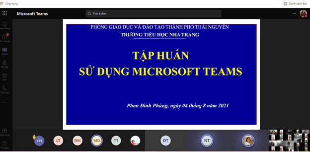
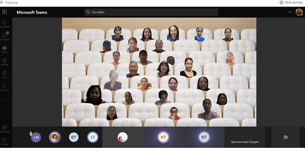
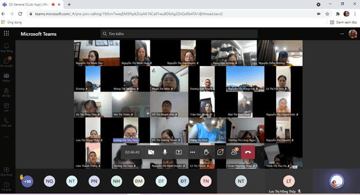

TẬP HUẤN SỬ DỤNG ỨNG DỤNG MICROSOFT TEAMS
Chuyển đổi số là su thế tất yếu, diễn ra rất nhanh, đặc biệt trong bối cảnh của cuộc cách mạng Công nghiệp 4.0 hiện nay. Thực hiện kế hoạch số 770/KH-PGDĐT ngày 20/7/2021 của Phòng Giáo dục và đào tạo Thành phố Thái Nguyên về đẩy mạnh ứng dụng CNTT trong dạy học và việc triển khai chương trình học tập trực tuyến cho giáo viên và học sinh trong thời gian phòng, chống dịch bệnh COVID, ngày 4/8/2021 trường tiểu học Nha Trang đã tổ chức tập huấn cho toàn thể các bộ, giáo viên, nhân viên của trường tập huấn: Tạo, quản lí và vận hành lớp học trên phần mềm Microsoft Teams; làm quên với Microsoft From bằng hình thức trực tuyến qua Teams
Dưới sự chỉ đạo của ban giám hiệu nhà trường và sự hướng dẫn của các cô giáo: Vũ Thị Hường, Nông Thị Thương, Phạm Thị Ngọc đã chia sẻ một số nội dung bài học như:
- Làm việc với Microsoft Teams qua các nội dung:
- Tạo lớp học
- Gắn khóa học vào lớp học
- Mời học sinh tham gia lớp học
- Tạo các buổi học
- Thiết kế các bài khảo sát qua Microsoft from.
Nội dung buổi tập huấn được trình bày ngắn gọn, các thuật ngữ, khái niệm đơn giản và dễ hiểu. Sau buổi tập huấn, 100% các thầy cô giáo cơ bản đã nắm bắt được những nội dung quan trọng về cách sử dụng và ứng dụng phần mềm Microsoft Teams và Microsoft From trực tuyến vào dạy học và hướng dẫn học ôn tập cho học sinh, trên cơ sở đó góp phần đẩy mạnh việc ứng dụng CNTT trong giảng dạy và học tập trong năm học 2021-2022 và những năm học tiếp theo, từ đó nâng cao chất lượng dạy và học trong nhà trường góp phần thực hiện thắng lợi Nghị quyết số 01-NQ/TU ngày 31/12/2020 của Ban Chấp hành Đảng bộ tỉnh về Chương trình chuyển đổi số tỉnh thái Nguyên giai đoạn 2021-2025, định hướng đến năm 2030.
Một số hình ảnh buổi tập huấn


